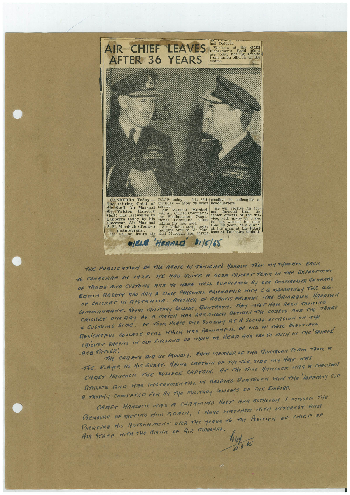

Book 1 · scan 156


Description
Transcription
Context
Review notes
Compare the machine draft with the scan. Handwriting and names need human review.
Artifacts
Edit the artifacts field in this note’s frontmatter to change these records. This summary is generated.
B01-S156-A01 — Newspaper clipping & Handwritten note — Book 1, scan 156
Types: Newspaper clipping, Handwritten note
Scope: Whole scanned page; individual items can be split out during review.
Caption: Not mapped yet.
Caption source: Not recorded yet.
Caption status: unmapped
Machine transcription
AIR CHIEF LEAVES AFTER 36 YEARS monur-Jung Tackobes Workers at the His Hereas Bend GMH today hearing reports from union officials on the 2huaes CANBERRA, Today.— RAAF today his 58th goodbye to colleagues The retiring Chief of birthday Air Staff, Air Marshal service. - alter 36 years headquarters. Sir Valston Hancock Air Marshal Murdoch He will receive his tor- was Air Officer Command- mal farewell (left) was farewelled in Canberra today by his ing Headquarters Opera- senior officers of the tional Command successor, before Air Marshal taking as new post. vice hasi with many of ser- whom worked A. M. Murdoch (Today's Sir Valston spent today than 30 years, for more at a dinner picturegram). handing over to Air Mar- at the mess at the RAAF Sir Valston leaves the shal Murdoch and saying base at Fairbairn tonight. •ELE 'HERALD' 31/8/65 THE PUBLICATION OF THE ABOYE IN TONIGHTS HERALD TOOK MY THOUGHTS BACK TO CANBERRA IN 1928. HE HAD QUITE A GOOD CRICKET TEAM IN THE DEPARTMENT OF TRAME ANT CUSTOMS AND ME HERE HELL SUPPORTER BY OUR COMPTROLAER GENERAL COmMANmANT. ROyAL MOLiTARy COLARSe, HUNTROON. THeY MUST HAVe BREN TANKING CRICKET ONE RAY AS A MATCH HAS ARRANGCA BETWeEN THe CARETS AND THe TRAMe * CUSTomS SIRe. IT TOO PLACE DNe SUNRY AS A SOCIAL OCCASION ON THe RELIGHTFUL COLLEGE OVAL WHEN WAS REMINAFUL OF ONE OF THOSE BEAUTIRUL CRiCKET GReeNS IN ON ENGLAND DE MHICH WE REAR AND SEE SO MUCH IN THE SPHERE 'TATER', THe CARETS MIR US PROUDAY. EACH MEMBER OF THE MUNTROON TeAM TOON A TAC. PLAYER AS HIS GUEST. BEING CAPTRIN OF THe TiC. SIGE mY HOST HAS CATET HANCOCK THE COLLEGE CAPTAIN. AT THe TiMe HANCOCK VIS A CHAMPION ATHLETE AND WAS INSTRUMENTAL IN MELPING HUNTROON WIN THe LAFFERTY GUA A TROPHY COMPETER FOR BY THe MILITARY COLLEGES OF THE EmPIRe. CARRET HANCOCI WAS A CHARMING HOST ANA RATHOUGM I MISSER THE PLeASURE OF MEETING HIM AGAIN, I HAYe WATCHED WITH INTEReST AND PAEASURe HIS DOrANCEMeNT OVeR THe YeARS TO THE POSITION OF CHIEF OF AIR STARE WITH THE RANI OF AIR MARSHAL. . 65